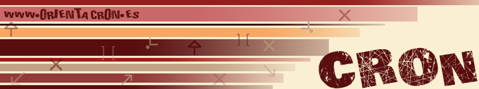

<mat-toolbar>

<span class="example-spacer"></span>
<div *ngIf="authService.userLoggedIn!=undefined">Zona de: {{authService.userLoggedIn.nombre}}
    <button mat-icon-button aria-label="Logout" (click)="logout();" tooltip="logout">
        <mat-icon>open_in_new</mat-icon>
      </button>
</div>
</mat-toolbar>
